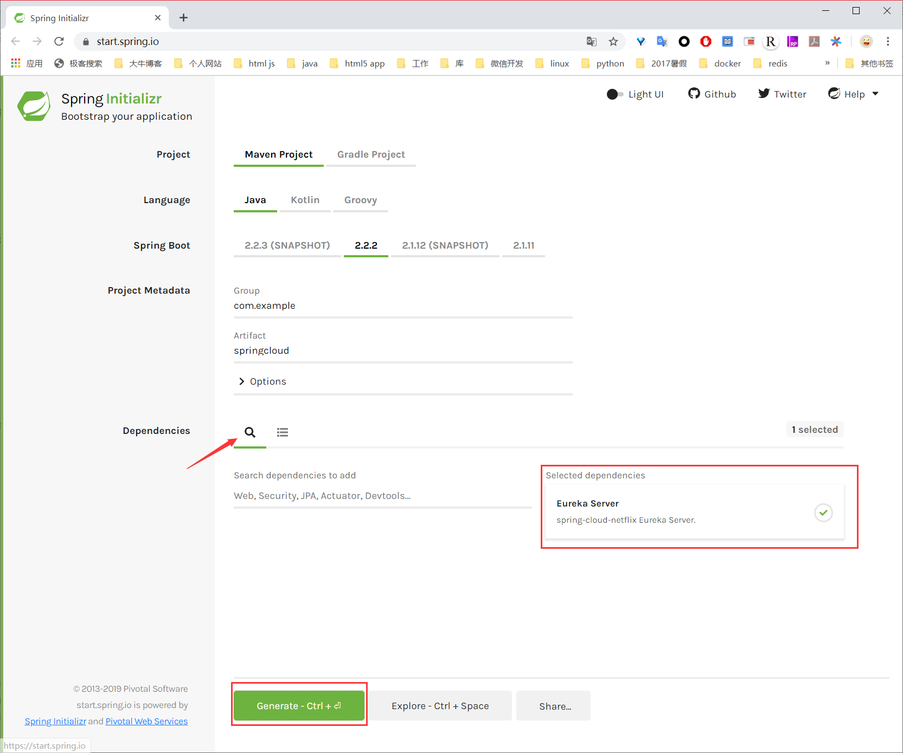

基于SpringBoot 2.x的Spring Cloud服务注册与发现
github项目地址
创建服务注册中心 创建springboot工程 1、在https://start.spring.io
2、选择Maven Project、Java、2.2.2，添加 Eureka server 依赖

3、点击Generate Project，解压下载的zip压缩包，再用Ideal打开。
添加注解 启动类添加 @EnableEurekaServer 注解
1 2 3 4 5 6 7 8 9 10 11 12 13 14 package com.example.springcloud;import org.springframework.boot.SpringApplication;import org.springframework.boot.autoconfigure.SpringBootApplication;import org.springframework.cloud.netflix.eureka.server.EnableEurekaServer;@EnableEurekaServer @SpringBootApplication public class SpringcloudApplication public static void main (String[] args) SpringApplication.run(SpringcloudApplication.class, args); } }
添加配置 1、修改pom.xml如下，基本上不需要修改什么，主要是引入spring-cloud-starter-netflix-eureka-server包。
1 2 3 4 5 6 7 8 9 10 11 12 13 14 15 16 17 18 19 20 21 22 23 24 25 26 27 28 29 30 31 32 33 34 35 36 37 38 39 40 41 42 43 44 45 46 47 48 49 50 51 52 53 54 55 56 57 58 59 60 61 62 63 64 65 66 67 68 69 70 <? xml version="1.0" encoding="UTF-8" ?> <project xmlns ="http://maven.apache.org/POM/4.0.0" xmlns:xsi ="http://www.w3.org/2001/XMLSchema-instance" xsi:schemaLocation ="http://maven.apache.org/POM/4.0.0 https://maven.apache.org/xsd/maven-4.0.0.xsd" > <modelVersion > 4.0.0</modelVersion > <parent > <groupId > com.example</groupId > <artifactId > springboot-integration</artifactId > <version > 1.0.0-SNAPSHOT</version > <relativePath /> </parent > <properties > <java.version > 1.8</java.version > <spring-cloud.version > Hoxton.RELEASE</spring-cloud.version > </properties > <groupId > com.example</groupId > <artifactId > springboot-cloud</artifactId > <version > 1.0.0-SNAPSHOT</version > <name > springcloud</name > <description > Demo project for Spring Cloud</description > <dependencies > <dependency > <groupId > org.springframework.cloud</groupId > <artifactId > spring-cloud-starter-netflix-eureka-server</artifactId > </dependency > <dependency > <groupId > org.springframework.boot</groupId > <artifactId > spring-boot-starter-test</artifactId > <scope > test</scope > </dependency > <dependency > <groupId > org.junit.jupiter</groupId > <artifactId > junit-jupiter-api</artifactId > <scope > test</scope > </dependency > <dependency > <groupId > org.springframework.boot</groupId > <artifactId > spring-boot-test</artifactId > <scope > test</scope > </dependency > </dependencies > <dependencyManagement > <dependencies > <dependency > <groupId > org.springframework.cloud</groupId > <artifactId > spring-cloud-dependencies</artifactId > <version > ${spring-cloud.version}</version > <type > pom</type > <scope > import</scope > </dependency > </dependencies > </dependencyManagement > <build > <plugins > <plugin > <groupId > org.springframework.boot</groupId > <artifactId > spring-boot-maven-plugin</artifactId > </plugin > </plugins > </build > </project >
2、在 application.yml 中添加以下配置
1 2 3 4 5 6 7 8 9 10 11 12 13 14 15 16 17 18 19 20 21 22 23 server: port: 8001 spring: application: name: service-01 eureka: instance: hostname: localhost client: registerWithEureka: false fetchRegistry: false serviceUrl: defaultZone: http://${eureka.instance.hostname}:${server.port}/eureka/
启动服务 启动Spring Boot项目，在浏览器中输入http://localhost:8001 即可进入Eureka主页面。
创建服务提供者 修改配置 提供者项目创建方式与注册中心服务器基本相同，只需做以下修改：
1、修改启动类注解@EnableEurekaServer为@EnableEurekaClient
2、将pom.xml文件中的 spring-cloud-starter-netflix-eureka-server换成 spring-cloud-starter-netflix-eureka-client，并加入如下的 web 包
1 2 3 4 <dependency > <groupId > org.springframework.boot</groupId > <artifactId > spring-boot-starter-web</artifactId > </dependency >
pom.xml
1 2 3 4 5 6 7 8 9 10 11 12 13 14 15 16 17 18 19 20 21 22 23 24 25 26 27 28 29 30 31 32 33 34 35 36 37 38 39 40 41 42 43 44 45 46 47 48 49 50 51 52 53 54 55 56 57 58 59 60 61 62 63 64 65 66 67 68 69 70 71 72 <? xml version="1.0" encoding="UTF-8" ?> <project xmlns ="http://maven.apache.org/POM/4.0.0" xmlns:xsi ="http://www.w3.org/2001/XMLSchema-instance" xsi:schemaLocation ="http://maven.apache.org/POM/4.0.0 https://maven.apache.org/xsd/maven-4.0.0.xsd" > <modelVersion > 4.0.0</modelVersion > <parent > <groupId > com.example</groupId > <artifactId > springboot-integration</artifactId > <version > 1.0.0-SNAPSHOT</version > <relativePath /> </parent > <groupId > com.example</groupId > <artifactId > springclient</artifactId > <version > 1.0.0-SNAPSHOT</version > <name > springclient</name > <description > Demo project for Spring cloud client</description > <properties > <java.version > 1.8</java.version > <spring-cloud.version > Hoxton.RELEASE</spring-cloud.version > </properties > <dependencies > <dependency > <groupId > org.springframework.boot</groupId > <artifactId > spring-boot-starter-web</artifactId > </dependency > <dependency > <groupId > org.springframework.cloud</groupId > <artifactId > spring-cloud-starter-netflix-eureka-client</artifactId > </dependency > <dependency > <groupId > org.springframework.boot</groupId > <artifactId > spring-boot-starter-test</artifactId > <scope > test</scope > </dependency > <dependency > <groupId > org.junit.jupiter</groupId > <artifactId > junit-jupiter-api</artifactId > <scope > test</scope > </dependency > <dependency > <groupId > org.springframework.boot</groupId > <artifactId > spring-boot-test</artifactId > <scope > test</scope > </dependency > </dependencies > <dependencyManagement > <dependencies > <dependency > <groupId > org.springframework.cloud</groupId > <artifactId > spring-cloud-dependencies</artifactId > <version > ${spring-cloud.version}</version > <type > pom</type > <scope > import</scope > </dependency > </dependencies > </dependencyManagement > <build > <plugins > <plugin > <groupId > org.springframework.boot</groupId > <artifactId > spring-boot-maven-plugin</artifactId > </plugin > </plugins > </build > </project >
3、修改application.yml
1 2 3 4 5 6 7 8 9 10 11 12 13 14 15 16 17 18 server: port: 8002 spring: application: name: server-01 eureka: instance: hostname: localhost status-page-url: http://${eureka.instance.hostname}:${server.port}/index client: serviceUrl: defaultZone: http://localhost:8001/eureka/
启动服务 启动项目成功后，即可在服务中心 DS Replicas -> Instances currently registered with Eureka 下发现此服务提供者了。
-------------本文结束